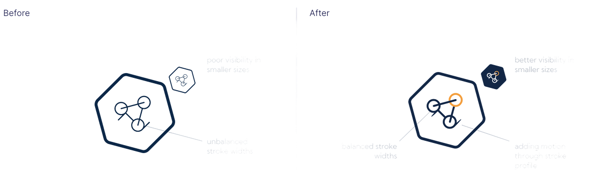
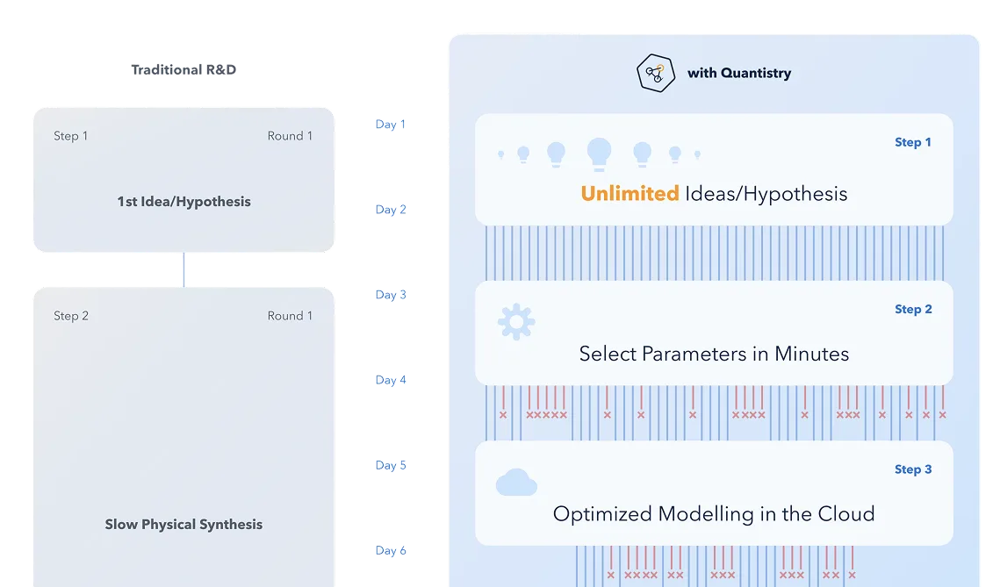
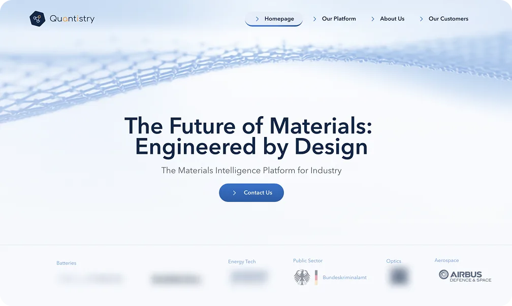

Case study — Quantistry
Designing for PhD chemists when you don't speak quantum chemistry.
Decoded complex quantum simulation into an investor-ready web platform, turning months of lab friction into days of simulation to anchor enterprise sales and Series A.
The client
Quantistry builds AI tools to simulate physical materials for R&D teams.
Instead of running slow lab experiments, scientists use Quantistry's software to predict chemical behavior. They had real technology and customers, but were preparing for a critical funding round with an outdated logo and no web presence to prove their market traction.
The problem
We need a brand and site refresh so we can raise our next investment round.
While competitors made vague AI promises with no real tech, Quantistry had working software but no way to show it. The challenge wasn't just talking about algorithms. We had to prove concrete business value to investors by demonstrating that R&D managers actually relied on their simulation tools to work faster.
- Signal Competitors flooded the space with AI rebrands, masking thin products behind generic buzzwords.
- Constraint A tight two-month launch window ahead of investor meetings, with a non-scientist designing for chemists.
- Unknown How to explain quantum chemistry clearly to investors without dumbing down the science for R&D leads.
How it got solved
Hover a step
-
01
Decoded the quantum chemistry
Interviewed the team to uncover the core value. The takeaway wasn't just complex science; it was raw speed to market.
VALUE REFRAME: DOMAIN COMPLEXITY TO CORE COMMERCIAL PROMISE -
02
Aligned two distinct audiences
Focused on solving R&D managers' daily pains. Proving direct value to scientists made the business case obvious to investors.
AUDIENCE INTERSECTION: SCIENTISTS & INVESTORS CORE PITCH -
03
Built an identity grounded in science
Kept a credible scientific blue and added bright orange accents. It signaled modern AI without losing domain credibility.

LOGO MARK REDRAWN: STROKE BALANCE AND SMALL-SIZE LEGIBILITY -
04
Visualized the 10x speed advantage
Built motion graphics showing lab steps eliminated by simulation. The animation visualized time savings for R&D teams.

MOTION STORYBOARD: TRADITIONAL R&D ROUNDS VERSUS SIMULATED RUNS -
05
Anchored the site in proof
Structured pages around named clients, concrete case studies, and engineering handoff to ship the site on schedule.

SHIPPED HOMEPAGE: HERO AND NAMED-CUSTOMER PROOF STRIP
The impact
The live site became Quantistry's central engine for sales calls and investor meetings.
- 8 wks
- Brief to live site rollout
The new brand gave Quantistry immediate credibility across deeptech events, while the site cleanly bridged technical rigor and business value. It gave both founders and sales leads a sharp, defensible story to tell.